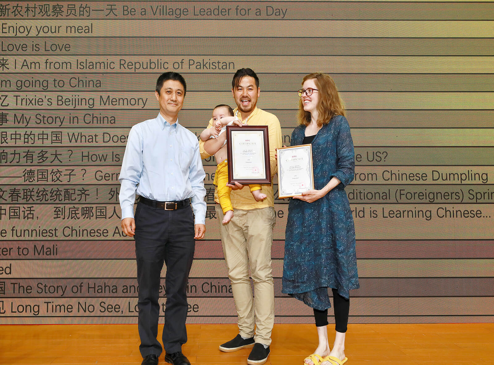
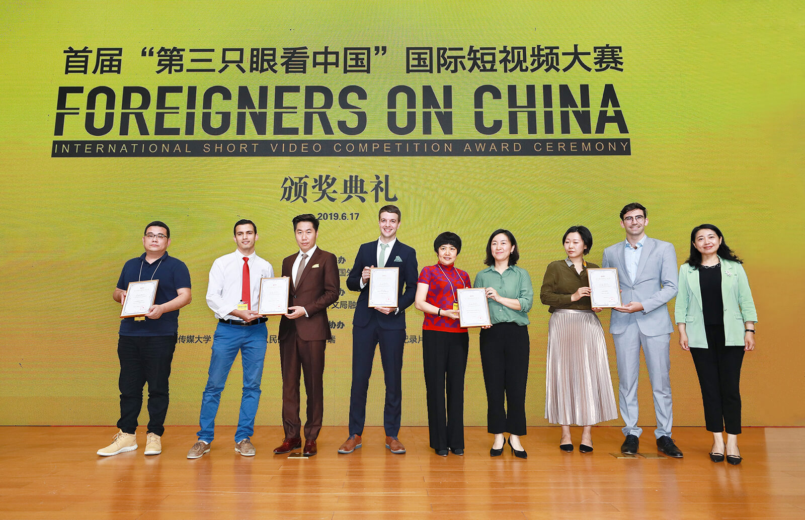
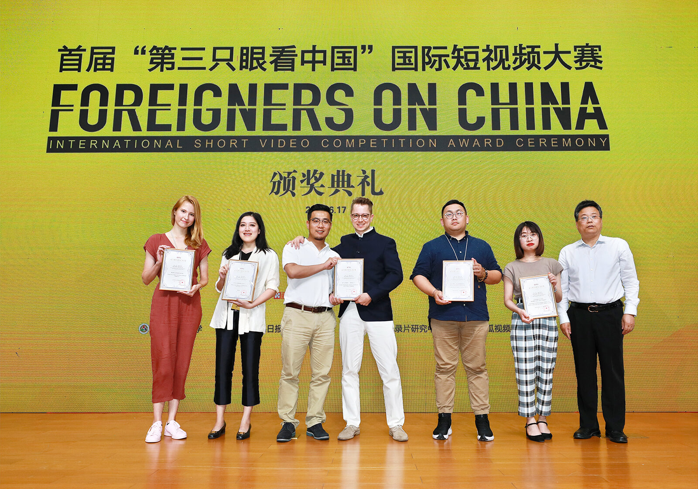

Short videos are becoming increasingly popular on social media, connecting people around the world. In China, short videos tell real stories about not only the country's development and lives of its people, but also foreigners who live and travel in the country.
With concerted efforts and full cooperation by the sponsor, organizer and co-organizers, after more than eight months of intense and orderly operation, the competition has collected over 300,000 submissions from more than 50 countries and regions, covering more than 10 languages including English, Russian, Korean, Thai, Vietnamese, French, Mongolian, Malay, Kazakh and Turkish. The organizing committee selected 466 works that fully meet the requirements of the competition and before presenting them to the judging panel composed of the organizer, co-organizer and industry insiders. On the basis of the preliminary selection, 50 entries were included and 25 of them were selected as the best videos among all. All the entries are promoted on both domestic and international platforms, garnering 20.4 impressions.
Gao Anming
Gao Anming is Vice President of China International Publishing Group, who enjoys the State Council Special Allowance.

Chen Shi
Chen Shi, a senior editor who has received an MBA from Renmin University of China, serves as Deputy Editor-in-Chief of China International Publishing Group (CIPG), Director of CIPG Digital Media Center and President of China Report Press.
He Suliu
Professor He Suliu, Vice President of Television School and Doctoral Supervisor of the Communication University of China (CUC), serves as Director of the China Documentary Research Center. He is the leading initiator of five domestic brand projects in documentary: Blue Book of Documentary-Annual Report on the Development of Chinese Documentary, the Documentary Evaluation System (DES), China's Academy Awards for Documentary Film (CAADF), the China Documentary Forum and the Quarterly Release of Documentary Industry Figures.
Chen Changfeng
Professor Chen Changfeng is Deputy Dean of the School of Journalism and Communication and Doctoral Supervisor of Tsinghua University. She also serves as President of the Chinese Association for History of Journalism and Communication, Vice-Chairperson of the Department of Teacher Education of Journalism and Communication of the Ministry of Education, member of the Subject Evaluation Group of Journalism and Communication of State Council Academic Degrees Committee and Standing Director of All-China Journalists Association.
Wayne Wanta
Wayne Wanta is a professor at the Department of Journalism at the University of Florida and an internationally renowned scholar for his research in political communication and media effects. He used to serve as the president of the Association for Education in Journalism and Mass Communication (AEJMC) and is currently a member of the National Journalism Accrediting Council. While previously with AEJMC, Wanta won the prestigious Krieghbaum Under-40 award.

Dorothy Liu
Dorothy Liu is A+E NETWORKS ASIA Representative of China and Supervising Director of co-production.

Li Zhi
Li Zhi is Professor and Doctoral Advisor of the Television School at Communication University of China (CUC). As a member of the Professional Documentary Council of Chinese Collegial Association for Visual Arts, he is also the advisor and council member of many other media and communication organizations. Among the key organizations are: China TV Artists Association; China National Radio Expert Panel; the Inspection Committee of China Journalism Awards; and the International Cooperation Committee of the National Communication Association in the United States.
Wang Tian
Wang Tian is Head of the People's Daily English language app. Launched in October 2017, People's Daily English language app is an important platform for People's Daily to communicate with the rest of the world.
During her years at People's Daily, Ms. Wang served as a committee member of the International News Department, a reporter based in Washington D.C., and commentary section chief of the International News Department.

Zhang Xiaoqun
Zhang Xiaoqun is Assistant Professor at the Department of Media Arts of the University of North Texas. His research interests include Media Economics and Management, audience research, digital media adoption and usage, and measurement of media coverage. He won the paper award with his research jointly from the Association for Education in Journalism and Mass Communication (AEJMC) and the Broadcast Education Association (BEA).

Patrick Shaou-Whea Dodge
Patrick Shaou-Whea Dodge is Assistant Professor of the University of Colorado, Denver (UCD) and a member of the National Communication Association's Task Force on Fostering International Collaborations in the Age of Globalization. His areas of expertise are culture & communication, intercultural & cross-cultural communication, and US-China communication. He's now working at the International College in Beijing jointly operated by UCD and China Agricultural University.
Wang Xinling
Wang Xinling, associate senior editor, is Assistant Director of CIPG Digital Media Center and Director of Video Department of the Center. She led the associate producers in making the multimedia project "A Miracle: Changes of China Seen by Global Scholars", which won the Award of Multimedia Innovation of the 28th China Journalism Awards, the highest honor in China's journalism industry.
On the afternoon of June 17, the award ceremony of the first “Foreigners on China” International Short Video Competition was held in Beijing. Apart from Gao Anming, vice president of China International Publishing Group (CIPG), Chen Shi, deputy editor-in-chief of CIPG and director of CIPG Digital Media Center (DMC), Chen Changfeng, vice president of the School of Journalism and Communication at Tsinghua University, and Wayne Wanta, journalism professor from Florida University, some 200 representatives from video teams and various organizations from home and abroad attended the event. Twenty-five entries were played and “Predestined” was singled out as the Grand Prize winner.
 ▲ Gao Anming, vice president of CIPG, addressed the award ceremony, saying that CIPG would work with different parties to present enticing videos to tell Chinese stories and showcase the country in a real and comprehensive way to the audience across the world.
▲ Gao Anming, vice president of CIPG, addressed the award ceremony, saying that CIPG would work with different parties to present enticing videos to tell Chinese stories and showcase the country in a real and comprehensive way to the audience across the world.
 ▲ Li Zhi, one of the judges and a professor from the School of Television of the Communication University of China, illustrated three features of the contest: “First, diversified source of the video clips. Second, a wide variety of creators, including blogger, media practitioners and college students from home and abroad. And finally, high quality of the entries, not only in filming techniques but also in artistic creation.”
▲ Li Zhi, one of the judges and a professor from the School of Television of the Communication University of China, illustrated three features of the contest: “First, diversified source of the video clips. Second, a wide variety of creators, including blogger, media practitioners and college students from home and abroad. And finally, high quality of the entries, not only in filming techniques but also in artistic creation.”
Chen Changfeng, one of the judges, remarked that the pursuit for harmony and beauty is shared by people around the world, and that these video entries seek to explore more about that from unique and interesting angles.
 ▲ The ceremony also marked the launch of the second “Foreigners on China” International Short Video Competition, which will feature a new category themed on “poverty alleviation” in addition to the existing five categories.
▲ The ceremony also marked the launch of the second “Foreigners on China” International Short Video Competition, which will feature a new category themed on “poverty alleviation” in addition to the existing five categories.
 ▲ Gao Anming, vice president of CIPG, presents award to the producers of “Predestined.”
 ▲ Chen Changfeng, vice president of the School of Journalism and Communication at Tsinghua University, poses with some of the award winners.
▲ Chen Changfeng, vice president of the School of Journalism and Communication at Tsinghua University, poses with some of the award winners.
 ▲ Deputy Party Committee Secretary of Confucius Institute Headquarters Yu Tianqi poses with some of the award winners.
 ▲ Wayne Wanta, journalism professor from Florida University, poses with some of the award winners.
▲ Wayne Wanta, journalism professor from Florida University, poses with some of the award winners.
 ▲ Xu Hejian, deputy director of the Publicity Department of the CPC Beijing Municipal Committee and director of the Information Office of the Beijing Municipal People’s Government, poses with some of the award winners.
 ▲ Chen Shi, deputy editor-in-chief of CIPG and director of CIPG DMC, poses with some of the award winners.
▲ Chen Shi, deputy editor-in-chief of CIPG and director of CIPG DMC, poses with some of the award winners.
▲ Scene from the award ceremony of the First “Foreigners on China” International Video Competition
Established in 1949, CIPG, the event organizer, is China’s oldest and largest organization specializing in international communication. With 21 subsidiaries and 26 overseas branches in 14 countries and regions including the US, UK, Russia, Mexico, Japan and Thailand, its business scope covers internet and social media, book and magazine publication, translation, think tanks and cross-cultural exchanges. CIPG DMC is a new media company committed to mobile, social and visual content production, with more than 200 videos produced in multiple languages annually.
“Foreigners on China,” a social media video brand from CIPG, has presented more than 300 short videos produced in eight languages oriented to different regions and countries. The “Foreigners on China” International Short Video Competition aims to encourage video creators from around the world to tell stories about China’s development from their unique angles.
Grand Prize
Excellence Awards
A Sixty-year-old Young Man
Can you step out of your own box of where you were born？
What do Thais think of Chinese?
Hello, I want to visit China
Wonderful Chinese New Year in the UK ？
Challenging Fuzhou snacks
Why will Jewish people always be thankful to China? These two cultures are surprisingly similar!
Oh My God! Hollywood Stars Speak Chinese Like This!？
Lily
Foreign Professor of Chemistry
Stick to Chinese road and enjoy the beauty of culture
Foreign Student Studying in China
China Story in New Era
ABC of Sound Meters in Poetry
Karen Smith: Chinese contemporary art in her eyes
Dreaming My Dream
Francesco Aliberti and China
Dieter, a "Chengdu generalist" from Belgium
Journey to the East
One Day in China
China Street Market
Meiying Loves Dancing
Beyond Cashless
A Day in Beijing Subway Station
What is the TieHua
What Is It Like To Take First Class Cabin in China’s High-speed Railway?